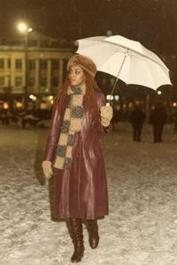

Павел Яденов

Павел Яденов (згур. и дегл. Pavel Jadenov, глаг. ⰒⰀⰂⰅⰎ ⰡⰄⰅⰐⰑⰂ; 1920-1996) — сотрудник Министерства народной безопасности (Naprava ob oxrone naroda, НОН) Народной Республики Верхняя Паннония. В должности главы Управления экономической разведки сыграл видную роль в подготовке постсоциалистических рыночных реформ.
Происхождение
В 1884-1887 годах паннонский аристократ и путешественник Адальфрид Аттила Брегови совершил кругосветное путешествие, в ходе которого приобрёл несколько «живых образцов примитивных рас» для своего человеческого зоопарка в Гниловодах. В их числе были два подростка-меланезийца с Соломоновых островов, мальчик Яден и девочка Тегу. Большинство «образцов» умерло ещё в путешествии или уже в Паннонии, но Яден и Тегу выжили и образовали семью. Они жили в Гниловодах на положении экспонатов зоопарка, в традиционной хижине, занимаясь привычным сельским хозяйством, насколько позволял местный микроклимат. Но зимой им было нечем себя занять, а отсутствие большой семьи и рода тяготило их, и оба быстро спились и рано умерли.
Из их детей выжила только одна дочь, Каролина Яденова (1895-1944). Её рано взяла на воспитание Марта, жена Отто Островита Брегови, сына и наследника Адальфрида Аттилы. Каролина была доверенной и преданной служанкой Марты, неотлучно сопровождая её всю жизнь. Марта принимала участие в её судьбе и даже пыталась выдать замуж. Сохранилось письмо Марты к мужу, где она жалуется, как тяжело найти достойного жениха Каролине с её необычной, для многих отталкивающей внешностью. Каролина так и не вышла замуж, но в 1920 году вступила в связь с сенегальским стрелком из французской военной миссии и родила от него сына Павла.
Детство и юность
Павел Яденов рос в доме Брегови, как и его мать, на правах воспитанника и будущего слуги. В 1938 году он был призван на срочную службу в Королевскую армию. Под конец срока, осенью 1940 года, его полк принял участие в короткой кампании против венгерского вторжения (см. Король Дроган). После демобилизации Павел вернулся в дом Брегови и был нанят телохранителем Отто Островита.
Официальная биография утверждает, будто в период оккупации Яденов «участвовал в Сопротивлении, скрываясь под фальшивым именем»; последнее кажется невозможным для единственного чернокожего мужчины в стране. Как бы то ни было, в 1944 году Павел Яденов и его мать были арестованы именно под предлогом «участия в Сопротивлении» и отправлены в трудовые лагеря. Каролина погибла; Павел дожил до освобождения лагеря Народной армией осенью 1944 года. Вскоре после освобождения он был мобилизован в Народную армию, а оттуда по личному распоряжению Шаменицкого переведён в «специальные отряды» НОН.
Первые годы в НОН
Как боец спецотряда Яденов воевал против «фашистских бандитов», т.е. партизанских группировок монархического Сопротивления, участвовал в печально известном сожжении деревни Крешевецка Рава в августе 1946 года, а затем был переведён во Вроновицкое следственное управление. Яденов принимал участие во многих следствиях по политическим делам в 1947-1953 гг. Не имея никакой профессиональной подготовки, он обладал, однако, устрашающей внешностью и грубыми манерами, и благодаря этому с успехом играл злого следователя в паре «добрый и злой». На первых порах режим Гоубки был сравнительно мягким и предпочитал психологическое давление физическому. Но размах репрессий нарастал, и времени на психологические игры оставалось всё меньше — надо было быстро и не церемонясь выбивать из жертв показания. С этим Яденов тоже отлично справлялся, заработав репутацию одного из самых страшных следователей НОН и кличку «чёрный дьявол».
В первые послевоенные годы НОН был заполнен советскими специалистами из НКВД и СМЕРШ, и во многом ими же создан. В 1953 году в Москве пал Берия; это дало Шаменицкому повод провести массированную чистку бериевских кадров и в рамках этой кампании избавиться от советских опекунов. Освободилось много вакансий, которые нужно было заполнить верными людьми. На волне этой перетряски Павел Яденов с его чистой биографией был повышен до начальника Управления экономической разведки — подразделения, чьей основной задачей был технологический шпионаж.
Связи
Павел, выросший в доме видного аристократа, знал многих представителей высшей элиты докоммунистической Верхней Паннонии. Конечно, для них он был всего лишь экзотическим слугой, но смена режима заставила пересмотреть роли. Отто Островит Брегови с семьёй эмигрировал в 1944 году и умер в 1946 году. Вскоре после него умерла и Марта. Их сын, новый глава дома, скульптор Световит, попросил коммунистические власти разрешить ему вернуться в страну, отрёкшись от княжеского титула. Павел лично поручился перед Шаменицким за его лояльность, и разрешение было дано; в дальнейшем Световит Брегови стал маститым официальным скульптором Народной Республики и председателем Академии художеств НРВП.
В 1949 году Яденов женился на другой аристократке, Доре Олещан (1925-1989), дочери графа Юстуса Олещана. Эта семья была традиционно провенгерской, что ей дорого обошлось: в 1946 году граф Юстус был расстрелян, а его жена Ирена брошена в лагерь, где скончалась в 1948 году. Два их старших сына успели эмигрировать, а Дора осталась в Паннонии сиротой без средств к существованию и в опасном статусе дочери врагов народа. Брак с Павлом Яденовым был с её стороны, вероятно, вынужденным, но оказался прочным. Супруги прожили вместе всю жизнь, и, по отзывам знакомых, благодаря жене Павел со временем приобрёл светский лоск и манеры культурного человека, хотя так никогда и не получил высшего образования.
Управление экономической разведки
Личные связи в среде старой аристократии, в том числе эмигрантской, помогли Яденову в его работе на новой должности. Экономическая разведка требовала агентурной сети в мире западного бизнеса. Яденов обладал необходимыми для этого связями и умело использовал их. В 1961 году в Институте социалистической экономики был открыт Центр исследований современного капитализма (ЦИСК) под его кураторством. Этот центр поставлял Управлению экономической разведки (УЭР) аналитику, а также посылал учёных на заграничные конференции. Многие из этих учёных напрямую работали на УЭР и использовали конференции для вербовки агентуры из экспертов и бизнесменов западных стран.
УЭР работало эффективно и обеспечило растущую паннонскую промышленность многими важными технологиями; промышленный и строительный бум в стране в 1950-1960-х годах, несомненно, многим ему обязан. ЦИСК собрал самых сильных экономистов в стране; неудивительно, что они первыми заметили тревожные признаки. После 1974 года, когда ЦИСК возглавил Вацлав Блуха, он стал главным интеллектуальным штабом экономистов-рыночников, призывавших к смягчению плановой системы по образцу Венгрии и Югославии. В закрытых аналитических записках для УЭР он предупреждал о приближающемся кризисе и доказывал необходимость реформ. В смягчённой форме Яденов передавал эту информацию наверх, но Гоубка ничего не желал слышать о пересмотре основ плановой экономики.
Последние годы
В 1990 году, после падения коммунистического режима, УЭР было распущено в порядке радикального сокращения НОН, и 70-летний Яденов ушёл на пенсию. Тогда же появились разоблачительные публикации о его неприглядной роли в событиях 1946-1953 годов. Яденов категорически отрицал, что пытал подследственных, но в то же время оправдывался тем, что «время было суровое, и речь шла о выживании государства». Никаких расследований не было, никакого наказания он не понёс, а остался уважаемым человеком и консультировал многие нарождающиеся частные предприятия периода приватизации. В 1991 году он уехал в Швейцарию, где жил в элитном доме престарелых. Он никак не участвовал в событиях гражданской войны, не комментировал их и не контактировал с паннонскими политиками того периода. Он умер в 1996 году.


Единственная дочь Павла и Доры Яденовых, Ханна, родилась в 1950 году. Она получила актёрское образование, но из-за необычного, очень смуглого цвета кожи не могла получить главных ролей на традиционной паннонской сцене того времени. В 1969 году, ещё студенткой, она вышла замуж за студента режиссёрского факультета Берислава Жлутоводского. Он впоследствии сделал карьеру режиссёра-экспериментатора, основал свою студию «Театр Сфинкса» и ставил авангардные спектакли, где цвет кожи актёра не имел значения; там Ханна могла блистать в главных ролях. Благодаря покровительству Яденова «Театр Сфинкса» много ездил на заграничные гастроли и театральные фестивали даже в период самой суровой изоляции страны. В настоящее время (2026) супруги совместно управляют Муниципальным театром в згурской зоне Вроновицы.
Категории: Межвоенная эпоха, Персоналии, Сотрудники спецслужб, Постсоциалистическая эпоха, Социалистическая эпоха, Эпоха Габсбургов